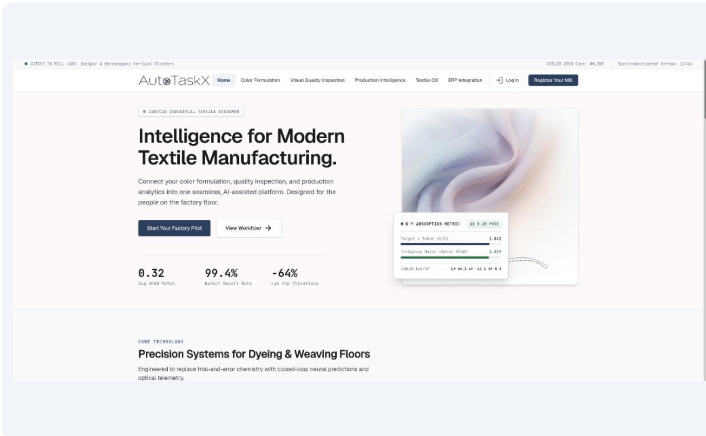
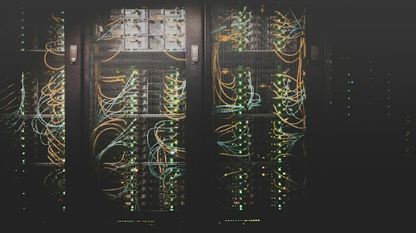

Making Textile Manufacturing
Smarter, Connected,
and More Efficient.
AutoTaskX connects physical textile machinery, lab spectrophotometers, and IoT sensors via MQTT into a unified real-time digital twin — automating recipes, vision inspection, and enterprise synchronization.

What AutoTaskX Does
Five Integrated Modules.
One Industrial Ecosystem.



Feature 02 · Machine Vision
Every Metre of Fabric.
Inspected Automatically.
Continuous optical fabric inspection with sub-millimeter flaw classification. Industrial line-scan cameras and mobile spot inspections both stream to a unified vision model.


Feature 04 · Central Nervous System
Textile OS & Digital Twin
Connect Every Machine.
AutoTaskX captures high-frequency industrial IoT signals over MQTT, creating a synchronized digital twin of every machine on the factory floor regardless of age or brand.
Compatible protocols: Modbus RTU/TCP · OPC-UA · LwM2M · MQTT · BACnet · Serial RS485
Connecting Every Part
of Textile Manufacturing.
"AutoTaskX is an industrial IoT & digital twin platform built to make textile manufacturing smarter — one sensor, one algorithm, one connection at a time."
Sheikh Shamiul Shakib
Software Engineer · BUTEX Alumnus